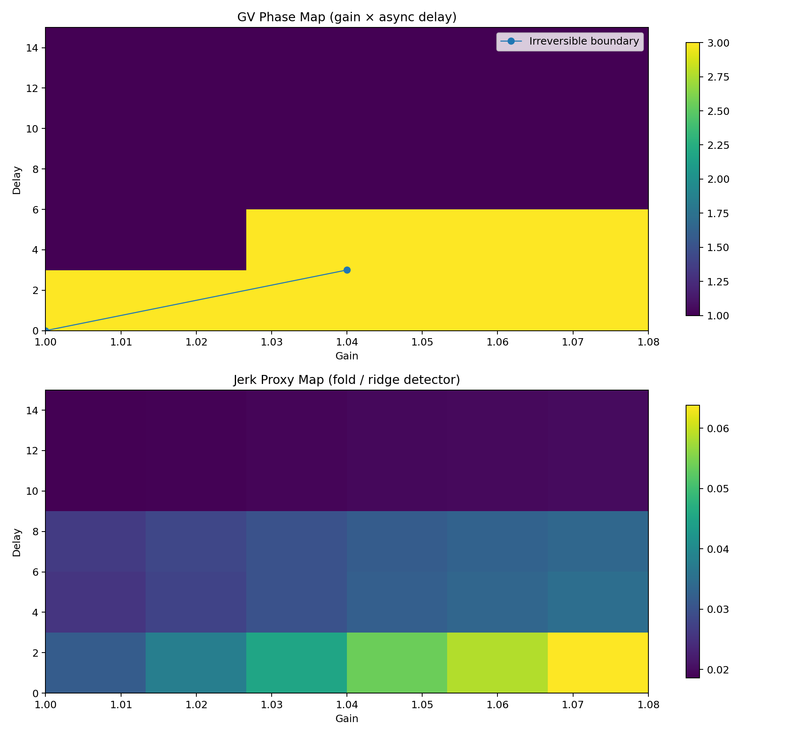

Make strain legible
Study drift, stability, and recoverability signals without presenting them as certainty.
ResearchIndependent safety engineering
We make system strain legible and powerful software governable, while keeping decisions, permissions, and the switch under human authority.
Research stage. Runtime governance is experimental. GVAI Intelligence is in development. No live analysis or operational safety service is offered here.

We research how changing constraints affect recoverability, and how agent actions can be evaluated before they reach authoritative systems. Oversight, permissions, and shutdown authority must remain outside the system being governed.
Read the current threat modelTechnology overview
Study drift, stability, and recoverability signals without presenting them as certainty.
ResearchTest proposed actions against explicit invariants and observed effects.
PrototypeThe governed agent does not own policy, permissions, or the switch that stops it.
Design principleFuture business tools are intended to explore regional workforce evidence, automation exposure, and transition scenarios. Customer access, data controls, and evaluation are still in development.
Business directionFuture government tools are intended to support regional exploration and planning. No public-sector analysis service or decision system is offered by this page.
Government directionA future platform for internal engineering and external customers, with separate identities, tenant boundaries, tool permissions, and independent enforcement.
Platform directionA future intelligence layer for internal operators and external customers, designed around distinct identities, tenant boundaries, tool permissions, and independent safety enforcement.
Separate internal identities and permissions for work on the platform itself.
Separate customer identities, tenant-scoped data, and explicitly permitted tools.
Identity and authorization interfaces exist as a foundation only. There is no production login, live model connection, tenant service, or customer data processing in this website.